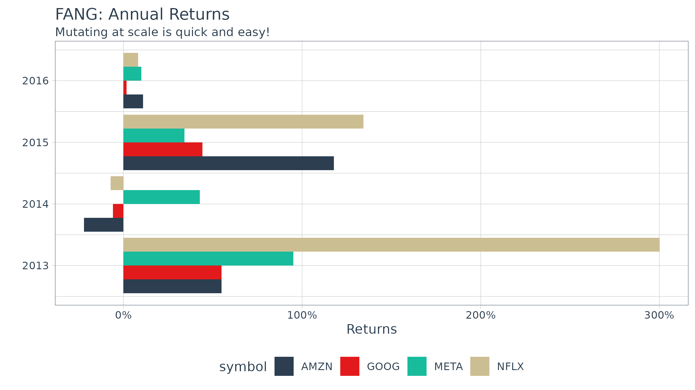
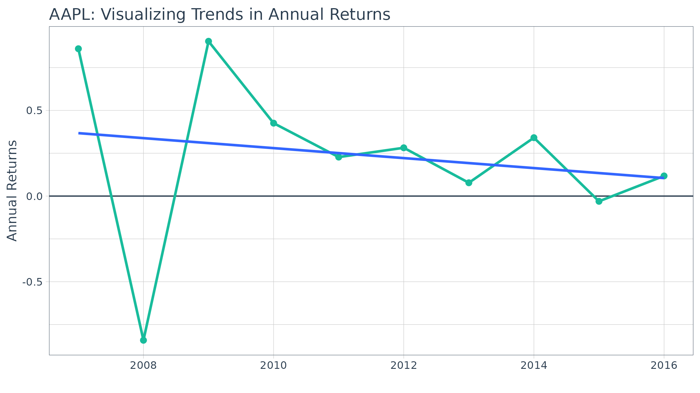

Scaling and Modeling with tidyquant
Matt Dancho
2025-03-01
Source:vignettes/TQ03-scaling-and-modeling-with-tidyquant.Rmd
TQ03-scaling-and-modeling-with-tidyquant.RmdDesigned for the data science workflow of the
tidyverse
Overview
The greatest benefit to tidyquant is the ability to
apply the data science workflow to easily model and scale your financial
analysis as described in R for
Data Science. Scaling is the process of creating an analysis
for one asset and then extending it to multiple groups. This idea of
scaling is incredibly useful to financial analysts because typically one
wants to compare many assets to make informed decisions. Fortunately,
the tidyquant package integrates with the
tidyverse making scaling super simple!
All tidyquant functions return data in the
tibble (tidy data frame) format, which allows for
interaction within the tidyverse. This means we can:
- Seamlessly scale data retrieval and mutations
- Use the pipe (
%>%) for chaining operations - Use
dplyrandtidyr:select,filter,group_by,nest/unnest,spread/gather, etc - Use
purrr: mapping functions withmap() - Model financial analysis using the data science workflow in R for Data Science
We’ll go through some useful techniques for getting and manipulating groups of data.
1.0 Scaling the Getting of Financial Data
A very basic example is retrieving the stock prices for multiple stocks. There are three primary ways to do this:
Method 1: Map a character vector with multiple stock symbols
## # A tibble: 756 × 8
## symbol date open high low close volume adjusted
## <chr> <date> <dbl> <dbl> <dbl> <dbl> <dbl> <dbl>
## 1 AAPL 2016-01-04 25.7 26.3 25.5 26.3 270597600 23.8
## 2 AAPL 2016-01-05 26.4 26.5 25.6 25.7 223164000 23.2
## 3 AAPL 2016-01-06 25.1 25.6 25.0 25.2 273829600 22.8
## 4 AAPL 2016-01-07 24.7 25.0 24.1 24.1 324377600 21.8
## 5 AAPL 2016-01-08 24.6 24.8 24.2 24.2 283192000 21.9
## 6 AAPL 2016-01-11 24.7 24.8 24.3 24.6 198957600 22.3
## 7 AAPL 2016-01-12 25.1 25.2 24.7 25.0 196616800 22.6
## 8 AAPL 2016-01-13 25.1 25.3 24.3 24.3 249758400 22.0
## 9 AAPL 2016-01-14 24.5 25.1 23.9 24.9 252680400 22.5
## 10 AAPL 2016-01-15 24.0 24.4 23.8 24.3 319335600 22.0
## # ℹ 746 more rowsThe output is a single level tibble with all or the stock prices in
one tibble. The auto-generated column name is “symbol”, which can be
preemptively renamed by giving the vector a name
(e.g. stocks <- c("AAPL", "GOOG", "META")) and then
piping to tq_get.
Method 2: Map a tibble with stocks in first column
First, get a stock list in data frame format either by making the
tibble or retrieving from tq_index /
tq_exchange. The stock symbols must be in the first
column.
Method 2A: Make a tibble
stock_list <- tibble(stocks = c("AAPL", "JPM", "CVX"),
industry = c("Technology", "Financial", "Energy"))
stock_list## # A tibble: 3 × 2
## stocks industry
## <chr> <chr>
## 1 AAPL Technology
## 2 JPM Financial
## 3 CVX EnergySecond, send the stock list to tq_get. Notice how the
symbol and industry columns are automatically expanded the length of the
stock prices.
## # A tibble: 756 × 9
## stocks industry date open high low close volume adjusted
## <chr> <chr> <date> <dbl> <dbl> <dbl> <dbl> <dbl> <dbl>
## 1 AAPL Technology 2016-01-04 25.7 26.3 25.5 26.3 270597600 23.8
## 2 AAPL Technology 2016-01-05 26.4 26.5 25.6 25.7 223164000 23.2
## 3 AAPL Technology 2016-01-06 25.1 25.6 25.0 25.2 273829600 22.8
## 4 AAPL Technology 2016-01-07 24.7 25.0 24.1 24.1 324377600 21.8
## 5 AAPL Technology 2016-01-08 24.6 24.8 24.2 24.2 283192000 21.9
## 6 AAPL Technology 2016-01-11 24.7 24.8 24.3 24.6 198957600 22.3
## 7 AAPL Technology 2016-01-12 25.1 25.2 24.7 25.0 196616800 22.6
## 8 AAPL Technology 2016-01-13 25.1 25.3 24.3 24.3 249758400 22.0
## 9 AAPL Technology 2016-01-14 24.5 25.1 23.9 24.9 252680400 22.5
## 10 AAPL Technology 2016-01-15 24.0 24.4 23.8 24.3 319335600 22.0
## # ℹ 746 more rowsMethod 2B: Use index or exchange
Get an index…
tq_index("DOW")## # A tibble: 31 × 8
## symbol company identifier sedol weight sector shares_held local_currency
## <chr> <chr> <chr> <chr> <dbl> <chr> <dbl> <chr>
## 1 GS GOLDMAN SAC… 38141G104 2407… 0.0860 - 5458984 USD
## 2 UNH UNITEDHEALT… 91324P102 2917… 0.0666 - 5458984 USD
## 3 MSFT MICROSOFT C… 594918104 2588… 0.0558 - 5458984 USD
## 4 HD HOME DEPOT … 437076102 2434… 0.0555 - 5458984 USD
## 5 V VISA INC CL… 92826C839 B2PZ… 0.0506 - 5458984 USD
## 6 SHW SHERWIN WIL… 824348106 2804… 0.0505 - 5458984 USD
## 7 CAT CATERPILLAR… 149123101 2180… 0.0483 - 5458984 USD
## 8 MCD MCDONALD S … 580135101 2550… 0.0441 - 5458984 USD
## 9 AMGN AMGEN INC 031162100 2023… 0.0435 - 5458984 USD
## 10 CRM SALESFORCE … 79466L302 2310… 0.0419 - 5458984 USD
## # ℹ 21 more rows…or, get an exchange.
tq_exchange("NYSE")Send the index or exchange to tq_get. Important
Note: This can take several minutes depending on the size of the index
or exchange, which is why only the first three stocks are evaluated in
the vignette.
## # A tibble: 7,665 × 15
## symbol company identifier sedol weight sector shares_held local_currency
## <chr> <chr> <chr> <chr> <dbl> <chr> <dbl> <chr>
## 1 GS GOLDMAN SAC… 38141G104 2407… 0.0860 - 5458984 USD
## 2 GS GOLDMAN SAC… 38141G104 2407… 0.0860 - 5458984 USD
## 3 GS GOLDMAN SAC… 38141G104 2407… 0.0860 - 5458984 USD
## 4 GS GOLDMAN SAC… 38141G104 2407… 0.0860 - 5458984 USD
## 5 GS GOLDMAN SAC… 38141G104 2407… 0.0860 - 5458984 USD
## 6 GS GOLDMAN SAC… 38141G104 2407… 0.0860 - 5458984 USD
## 7 GS GOLDMAN SAC… 38141G104 2407… 0.0860 - 5458984 USD
## 8 GS GOLDMAN SAC… 38141G104 2407… 0.0860 - 5458984 USD
## 9 GS GOLDMAN SAC… 38141G104 2407… 0.0860 - 5458984 USD
## 10 GS GOLDMAN SAC… 38141G104 2407… 0.0860 - 5458984 USD
## # ℹ 7,655 more rows
## # ℹ 7 more variables: date <date>, open <dbl>, high <dbl>, low <dbl>,
## # close <dbl>, volume <dbl>, adjusted <dbl>You can use any applicable “getter” to get data for every stock in an index or an exchange! This includes: “stock.prices”, “key.ratios”, “key.stats”, and more.
2.0 Scaling the Mutation of Financial Data
Once you get the data, you typically want to do something with it.
You can easily do this at scale. Let’s get the yearly returns for
multiple stocks using tq_transmute. First, get the prices.
We’ll use the FANG data set, but you typically will use
tq_get to retrieve data in “tibble” format.
FANG## # A tibble: 4,032 × 8
## symbol date open high low close volume adjusted
## <chr> <date> <dbl> <dbl> <dbl> <dbl> <dbl> <dbl>
## 1 META 2013-01-02 27.4 28.2 27.4 28 69846400 28
## 2 META 2013-01-03 27.9 28.5 27.6 27.8 63140600 27.8
## 3 META 2013-01-04 28.0 28.9 27.8 28.8 72715400 28.8
## 4 META 2013-01-07 28.7 29.8 28.6 29.4 83781800 29.4
## 5 META 2013-01-08 29.5 29.6 28.9 29.1 45871300 29.1
## 6 META 2013-01-09 29.7 30.6 29.5 30.6 104787700 30.6
## 7 META 2013-01-10 30.6 31.5 30.3 31.3 95316400 31.3
## 8 META 2013-01-11 31.3 32.0 31.1 31.7 89598000 31.7
## 9 META 2013-01-14 32.1 32.2 30.6 31.0 98892800 31.0
## 10 META 2013-01-15 30.6 31.7 29.9 30.1 173242600 30.1
## # ℹ 4,022 more rowsSecond, use group_by to group by stock symbol. Third,
apply the mutation. We can do this in one easy workflow. The
periodReturn function is applied to each group of stock
prices, and a new data frame was returned with the annual returns in the
correct periodicity.
FANG_returns_yearly <- FANG %>%
group_by(symbol) %>%
tq_transmute(select = adjusted,
mutate_fun = periodReturn,
period = "yearly",
col_rename = "yearly.returns") Last, we can visualize the returns.
FANG_returns_yearly %>%
ggplot(aes(x = year(date), y = yearly.returns, fill = symbol)) +
geom_bar(position = "dodge", stat = "identity") +
labs(title = "FANG: Annual Returns",
subtitle = "Mutating at scale is quick and easy!",
y = "Returns", x = "", color = "") +
scale_y_continuous(labels = scales::percent) +
coord_flip() +
theme_tq() +
scale_fill_tq()
3.0 Modeling Financial Data using purrr
Eventually you will want to begin modeling (or more generally
applying functions) at scale! One of the best features
of the tidyverse is the ability to map functions to nested
tibbles using purrr. From the Many Models chapter of “R for Data Science”, we can apply the
same modeling workflow to financial analysis. Using a two step
workflow:
- Model a single stock
- Scale to many stocks
Let’s go through an example to illustrate.
Example: Applying a Regression Model to Detect a Positive Trend
In this example, we’ll use a simple linear model to identify the trend in annual returns to determine if the stock returns are decreasing or increasing over time.
Analyze a Single Stock
First, let’s collect stock data with tq_get()
AAPL <- tq_get("AAPL", from = "2007-01-01", to = "2016-12-31")
AAPL## # A tibble: 2,518 × 8
## symbol date open high low close volume adjusted
## <chr> <date> <dbl> <dbl> <dbl> <dbl> <dbl> <dbl>
## 1 AAPL 2007-01-03 3.08 3.09 2.92 2.99 1238319600 2.52
## 2 AAPL 2007-01-04 3.00 3.07 2.99 3.06 847260400 2.58
## 3 AAPL 2007-01-05 3.06 3.08 3.01 3.04 834741600 2.56
## 4 AAPL 2007-01-08 3.07 3.09 3.05 3.05 797106800 2.57
## 5 AAPL 2007-01-09 3.09 3.32 3.04 3.31 3349298400 2.79
## 6 AAPL 2007-01-10 3.38 3.49 3.34 3.46 2952880000 2.92
## 7 AAPL 2007-01-11 3.43 3.46 3.40 3.42 1440252800 2.88
## 8 AAPL 2007-01-12 3.38 3.39 3.33 3.38 1312690400 2.85
## 9 AAPL 2007-01-16 3.42 3.47 3.41 3.47 1244076400 2.92
## 10 AAPL 2007-01-17 3.48 3.49 3.39 3.39 1646260000 2.86
## # ℹ 2,508 more rowsNext, come up with a function to help us collect annual log returns.
The function below mutates the stock prices to period returns using
tq_transmute(). We add the type = "log" and
period = "monthly" arguments to ensure we retrieve a tibble
of monthly log returns. Last, we take the mean of the monthly returns to
get MMLR.
get_annual_returns <- function(stock.returns) {
stock.returns %>%
tq_transmute(select = adjusted,
mutate_fun = periodReturn,
type = "log",
period = "yearly")
}Let’s test get_annual_returns out. We now have the
annual log returns over the past ten years.
AAPL_annual_log_returns <- get_annual_returns(AAPL)
AAPL_annual_log_returns## # A tibble: 10 × 2
## date yearly.returns
## <date> <dbl>
## 1 2007-12-31 0.860
## 2 2008-12-31 -0.842
## 3 2009-12-31 0.904
## 4 2010-12-31 0.426
## 5 2011-12-30 0.228
## 6 2012-12-31 0.282
## 7 2013-12-31 0.0776
## 8 2014-12-31 0.341
## 9 2015-12-31 -0.0306
## 10 2016-12-30 0.118Let’s visualize to identify trends. We can see from the linear trend line that AAPL’s stock returns are declining.
AAPL_annual_log_returns %>%
ggplot(aes(x = year(date), y = yearly.returns)) +
geom_hline(yintercept = 0, color = palette_light()[[1]]) +
geom_point(size = 2, color = palette_light()[[3]]) +
geom_line(linewidth = 1, color = palette_light()[[3]]) +
geom_smooth(method = "lm", se = FALSE) +
labs(title = "AAPL: Visualizing Trends in Annual Returns",
x = "", y = "Annual Returns", color = "") +
theme_tq()
Now, we can get the linear model using the lm()
function. However, there is one problem: the output is not “tidy”.
##
## Call:
## lm(formula = yearly.returns ~ year(date), data = AAPL_annual_log_returns)
##
## Coefficients:
## (Intercept) year(date)
## 58.86277 -0.02915We can utilize the broom package to get “tidy” data from
the model. There’s three primary functions:
-
augment: adds columns to the original data such as predictions, residuals and cluster assignments -
glance: provides a one-row summary of model-level statistics -
tidy: summarizes a model’s statistical findings such as coefficients of a regression
We’ll use tidy to retrieve the model coefficients.
## # A tibble: 2 × 5
## term estimate std.error statistic p.value
## <chr> <dbl> <dbl> <dbl> <dbl>
## 1 (Intercept) 58.9 113. 0.520 0.617
## 2 year(date) -0.0291 0.0562 -0.518 0.618Adding to our workflow, we have the following:
get_model <- function(stock_data) {
annual_returns <- get_annual_returns(stock_data)
mod <- lm(yearly.returns ~ year(date), data = annual_returns)
tidy(mod)
}Testing it out on a single stock. We can see that the “term” that contains the direction of the trend (the slope) is “year(date)”. The interpretation is that as year increases one unit, the annual returns decrease by 3%.
get_model(AAPL)## # A tibble: 2 × 5
## term estimate std.error statistic p.value
## <chr> <dbl> <dbl> <dbl> <dbl>
## 1 (Intercept) 58.9 113. 0.520 0.617
## 2 year(date) -0.0291 0.0562 -0.518 0.618Now that we have identified the trend direction, it looks like we are ready to scale.
Scale to Many Stocks
Once the analysis for one stock is done scale to many stocks is
simple. For brevity, we’ll randomly sample ten stocks from the
S&P500 with a call to dplyr::sample_n().
## # A tibble: 5 × 8
## symbol company identifier sedol weight sector shares_held local_currency
## <chr> <chr> <chr> <chr> <dbl> <chr> <dbl> <chr>
## 1 MKTX MARKETAXESS… 57060D108 B03Q… 1.46e-4 - 474488 USD
## 2 CMG CHIPOTLE ME… 169656105 B0X7… 1.45e-3 - 17098901 USD
## 3 TDY TELEDYNE TE… 879360105 2503… 4.69e-4 - 584455 USD
## 4 PTC PTC INC 69370C100 B95N… 3.93e-4 - 1507726 USD
## 5 MRNA MODERNA INC 60770K107 BGSX… 2.12e-4 - 4254577 USDWe can now apply our analysis function to the stocks using
dplyr::mutate() and purrr::map(). The
mutate() function adds a column to our tibble, and the
map() function maps our custom get_model
function to our tibble of stocks using the symbol column.
The tidyr::unnest() function unrolls the nested data frame
so all of the model statistics are accessible in the top data frame
level. The filter, arrange and
select steps just manipulate the data frame to isolate and
arrange the data for our viewing.
stocks_model_stats <- stocks_tbl %>%
select(symbol, company) %>%
tq_get(from = "2007-01-01", to = "2016-12-31") %>%
# Nest
group_by(symbol, company) %>%
nest() %>%
# Apply the get_model() function to the new "nested" data column
mutate(model = map(data, get_model)) %>%
# Unnest and collect slope
unnest(model) %>%
filter(term == "year(date)") %>%
arrange(desc(estimate)) %>%
select(-term)
stocks_model_stats## # A tibble: 4 × 7
## # Groups: symbol, company [4]
## symbol company data estimate std.error statistic p.value
## <chr> <chr> <list> <dbl> <dbl> <dbl> <dbl>
## 1 MKTX MARKETAXESS HOLDINGS INC <tibble> 0.0455 0.0344 1.32 0.223
## 2 PTC PTC INC <tibble> 0.0262 0.0281 0.932 0.379
## 3 TDY TELEDYNE TECHNOLOGIES INC <tibble> 0.0143 0.0232 0.617 0.554
## 4 CMG CHIPOTLE MEXICAN GRILL I… <tibble> -0.0559 0.0647 -0.863 0.413We’re done! We now have the coefficient of the linear regression that
tracks the direction of the trend line. We can easily extend this type
of analysis to larger lists or stock indexes. For example, the entire
S&P500 could be analyzed removing the sample_n()
following the call to tq_index("SP500").
4.0 Error Handling when Scaling
Eventually you will run into a stock index, stock symbol, FRED data code, etc that cannot be retrieved. Possible reasons are:
- An index becomes out of date
- A company goes private
- A stock ticker symbol changes
- Yahoo / FRED just doesn’t like your stock symbol / FRED code
This becomes painful when scaling if the functions return errors. So,
the tq_get() function is designed to handle errors
gracefully. What this means is an NA value is
returned when an error is generated along with a gentle error
warning.
tq_get("XYZ", "stock.prices")## # A tibble: 2,332 × 8
## symbol date open high low close volume adjusted
## <chr> <date> <dbl> <dbl> <dbl> <dbl> <dbl> <dbl>
## 1 XYZ 2015-11-19 11.2 14.8 9 13.1 47466100 13.1
## 2 XYZ 2015-11-20 13.9 14.1 12.5 12.9 16550300 12.9
## 3 XYZ 2015-11-23 13 13.1 12.1 12.1 5172200 12.1
## 4 XYZ 2015-11-24 12 12.2 11.5 12.0 4714700 12.0
## 5 XYZ 2015-11-25 12.1 12.4 11.9 11.9 3583400 11.9
## 6 XYZ 2015-11-27 12.1 12.3 11.9 12.1 942300 12.1
## 7 XYZ 2015-11-30 12.3 12.4 11.9 12.0 1997100 12.0
## 8 XYZ 2015-12-01 12.1 12.2 11.9 11.9 1256100 11.9
## 9 XYZ 2015-12-02 12.0 12.2 11.9 11.9 1708100 11.9
## 10 XYZ 2015-12-03 12.0 12.2 11.9 11.9 1431400 11.9
## # ℹ 2,322 more rowsPros and Cons to Built-In Error-Handling
There are pros and cons to this approach that you may not agree with, but I believe helps in the long run. Just be aware of what happens:
Pros: Long running scripts are not interrupted because of one error
Cons: Errors can be inadvertently handled or flow downstream if the user does not read the warnings
Bad Apples Fail Gracefully, tq_get
Let’s see an example when using tq_get() to get the
stock prices for a long list of stocks with one BAD APPLE.
The argument complete_cases comes in handy. The default is
TRUE, which removes “bad apples” so future analysis have
complete cases to compute on. Note that a gentle warning stating that an
error occurred and was dealt with by removing the rows from the
results.
## Warning: There was 1 warning in `dplyr::mutate()`.
## ℹ In argument: `data.. = purrr::map(...)`.
## Caused by warning:
## ! x = 'BAD APPLE', get = 'stock.prices': Error in getSymbols.yahoo(Symbols = "BAD APPLE", env = <environment>, : Unable to import "BAD APPLE".
## cannot open the connection
## Removing BAD APPLE.## # A tibble: 5,110 × 8
## symbol date open high low close volume adjusted
## <chr> <date> <dbl> <dbl> <dbl> <dbl> <dbl> <dbl>
## 1 AAPL 2015-01-02 27.8 27.9 26.8 27.3 212818400 24.3
## 2 AAPL 2015-01-05 27.1 27.2 26.4 26.6 257142000 23.6
## 3 AAPL 2015-01-06 26.6 26.9 26.2 26.6 263188400 23.6
## 4 AAPL 2015-01-07 26.8 27.0 26.7 26.9 160423600 24.0
## 5 AAPL 2015-01-08 27.3 28.0 27.2 28.0 237458000 24.9
## 6 AAPL 2015-01-09 28.2 28.3 27.6 28.0 214798000 24.9
## 7 AAPL 2015-01-12 28.1 28.2 27.2 27.3 198603200 24.3
## 8 AAPL 2015-01-13 27.9 28.2 27.2 27.6 268367600 24.5
## 9 AAPL 2015-01-14 27.3 27.6 27.1 27.5 195826400 24.4
## 10 AAPL 2015-01-15 27.5 27.5 26.7 26.7 240056000 23.8
## # ℹ 5,100 more rowsNow switching complete_cases = FALSE will retain any
errors as NA values in a nested data frame. Notice that the
error message and output change. The error message now states that the
NA values exist in the output and the return is a “nested”
data structure.
## Warning: There was 1 warning in `dplyr::mutate()`.
## ℹ In argument: `data.. = purrr::map(...)`.
## Caused by warning:
## ! x = 'BAD APPLE', get = 'stock.prices': Error in getSymbols.yahoo(Symbols = "BAD APPLE", env = <environment>, : Unable to import "BAD APPLE".
## cannot open the connection## # A tibble: 5,111 × 8
## symbol date open high low close volume adjusted
## <chr> <date> <dbl> <dbl> <dbl> <dbl> <dbl> <dbl>
## 1 AAPL 2015-01-02 27.8 27.9 26.8 27.3 212818400 24.3
## 2 AAPL 2015-01-05 27.1 27.2 26.4 26.6 257142000 23.6
## 3 AAPL 2015-01-06 26.6 26.9 26.2 26.6 263188400 23.6
## 4 AAPL 2015-01-07 26.8 27.0 26.7 26.9 160423600 24.0
## 5 AAPL 2015-01-08 27.3 28.0 27.2 28.0 237458000 24.9
## 6 AAPL 2015-01-09 28.2 28.3 27.6 28.0 214798000 24.9
## 7 AAPL 2015-01-12 28.1 28.2 27.2 27.3 198603200 24.3
## 8 AAPL 2015-01-13 27.9 28.2 27.2 27.6 268367600 24.5
## 9 AAPL 2015-01-14 27.3 27.6 27.1 27.5 195826400 24.4
## 10 AAPL 2015-01-15 27.5 27.5 26.7 26.7 240056000 23.8
## # ℹ 5,101 more rowsIn both cases, the prudent user will review the warnings to determine
what happened and whether or not this is acceptable. In the
complete_cases = FALSE example, if the user attempts to
perform downstream computations at scale, the computations will likely
fail grinding the analysis to a halt. But, the advantage is that the
user will more easily be able to filter to the problem root to determine
what happened and decide whether this is acceptable or not.